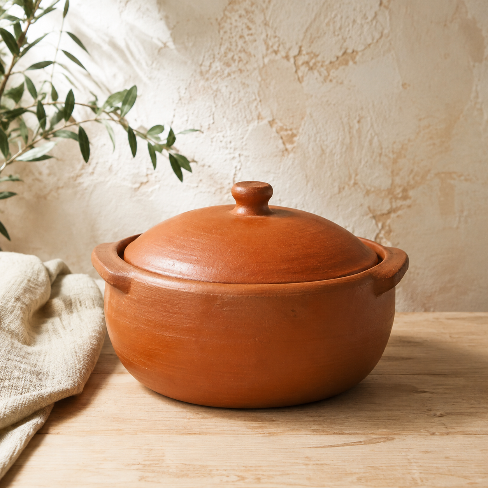
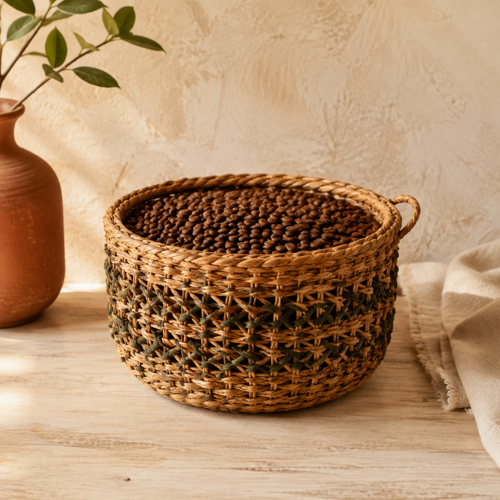
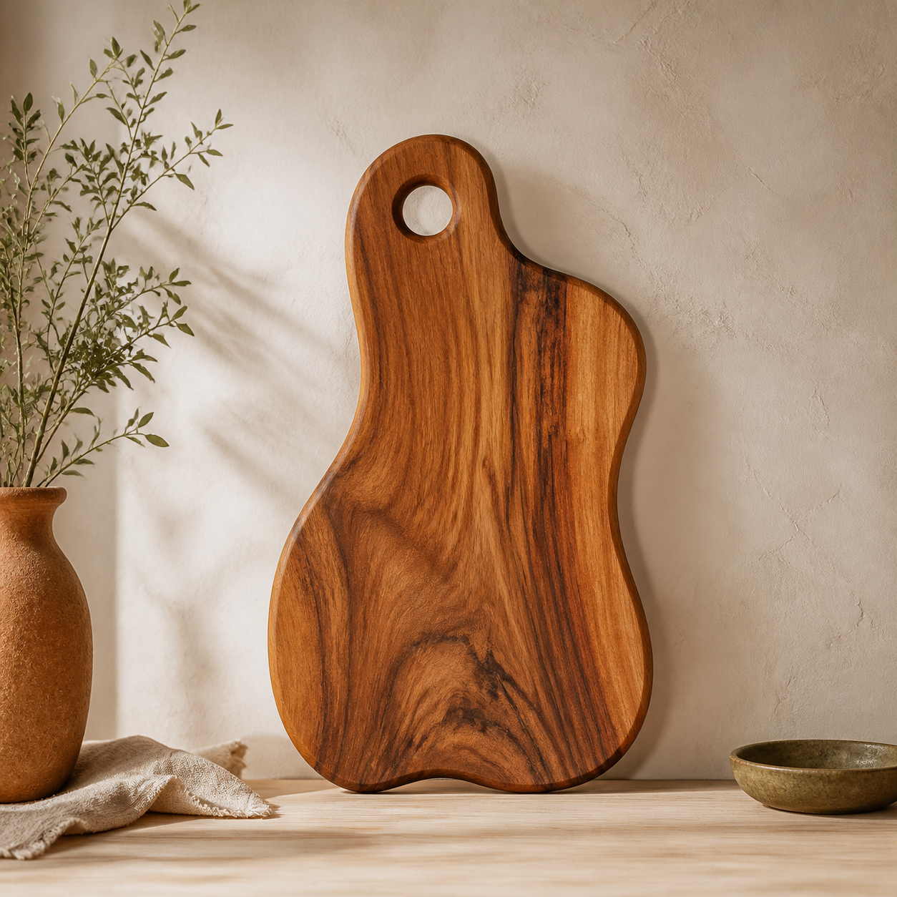
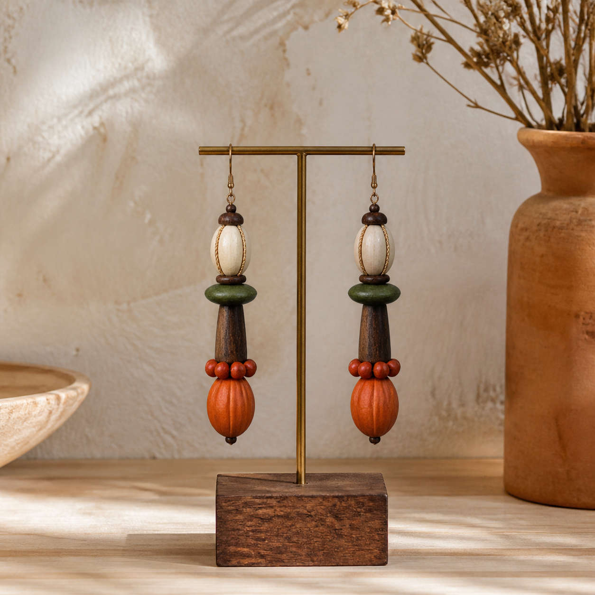
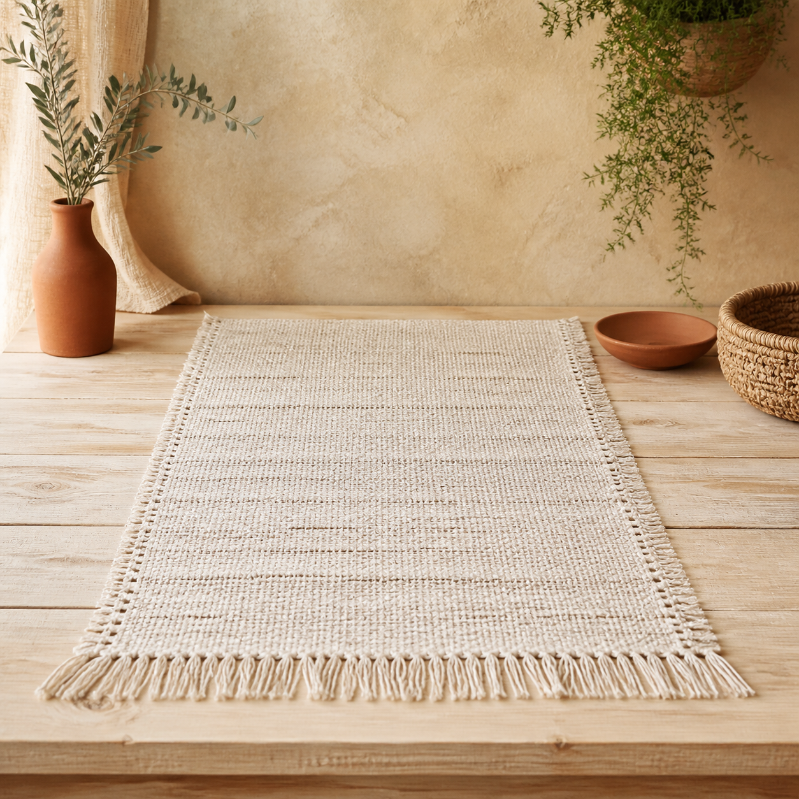
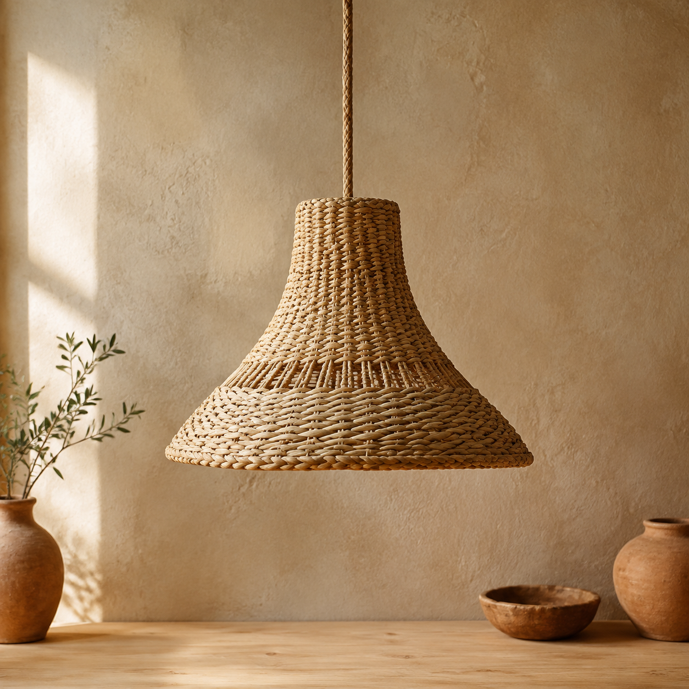
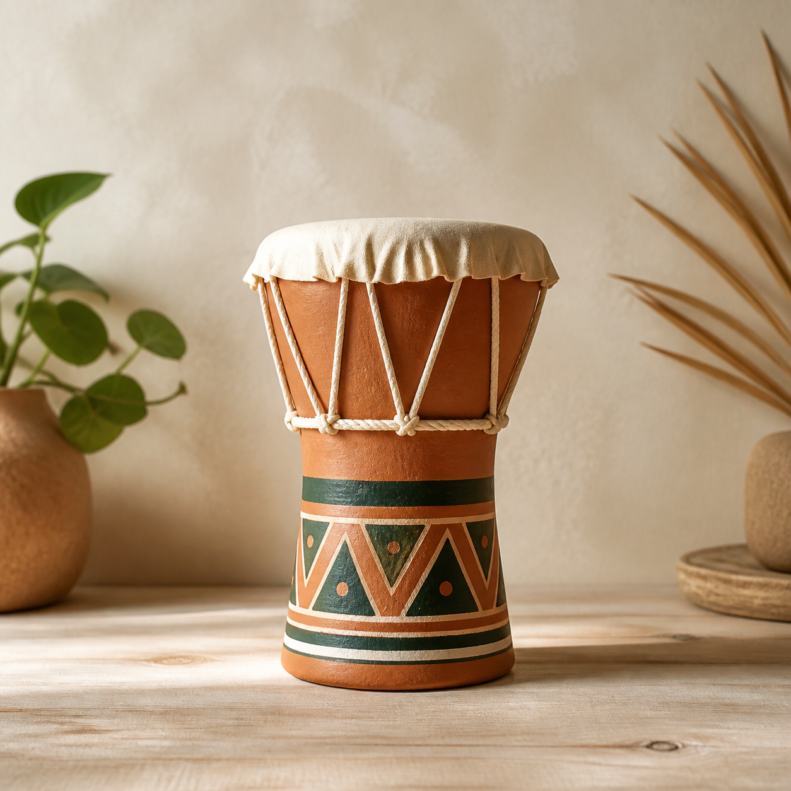
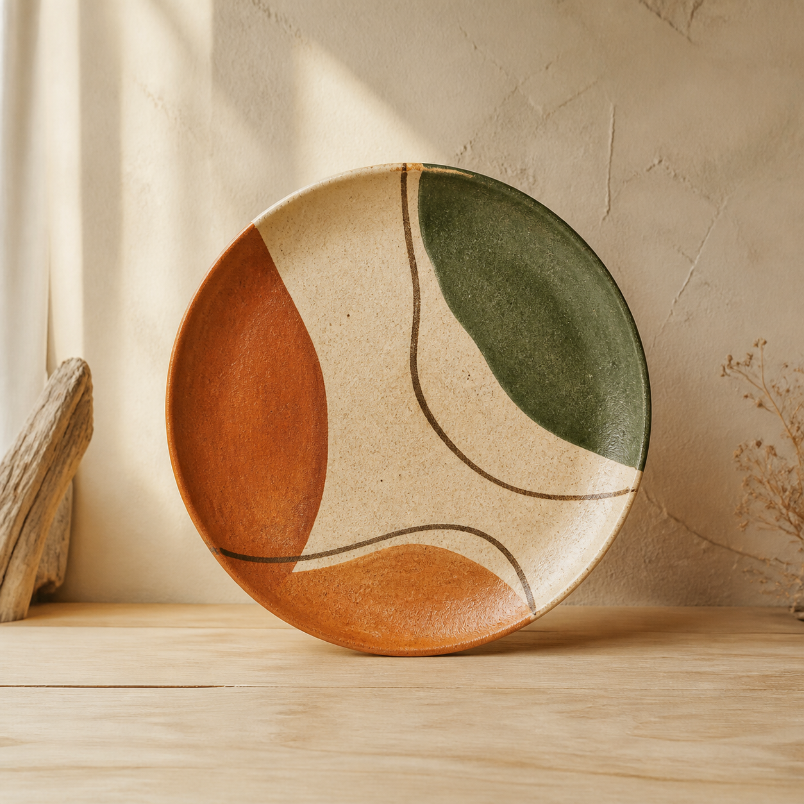
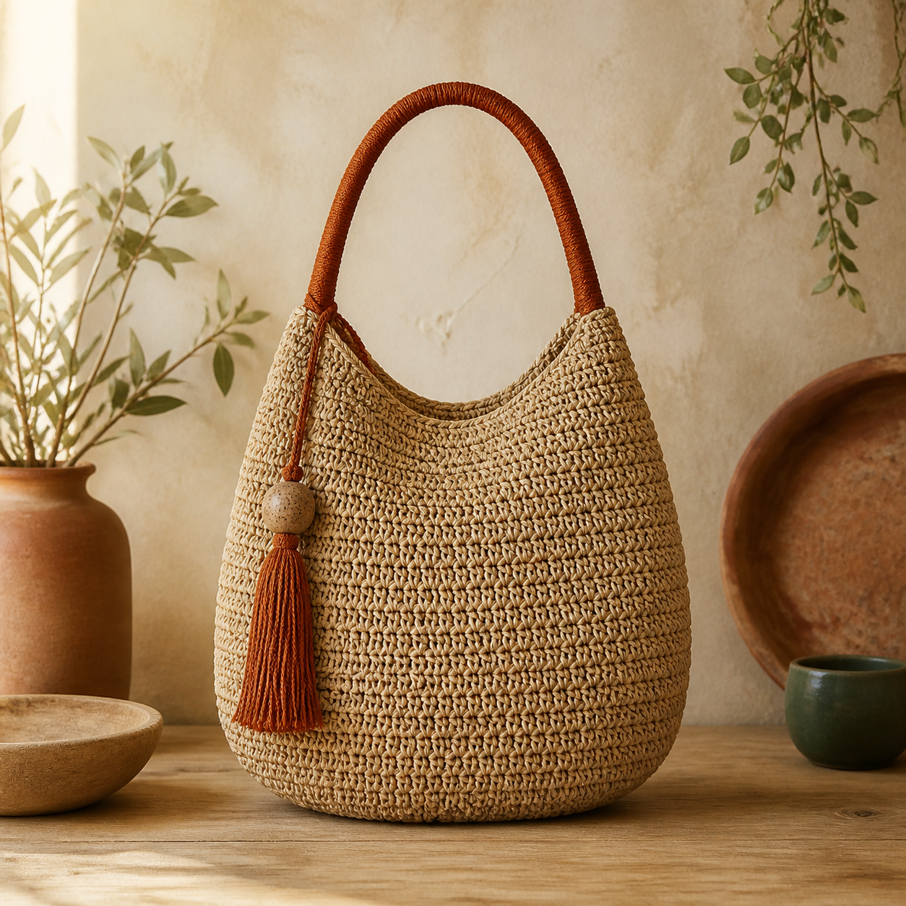
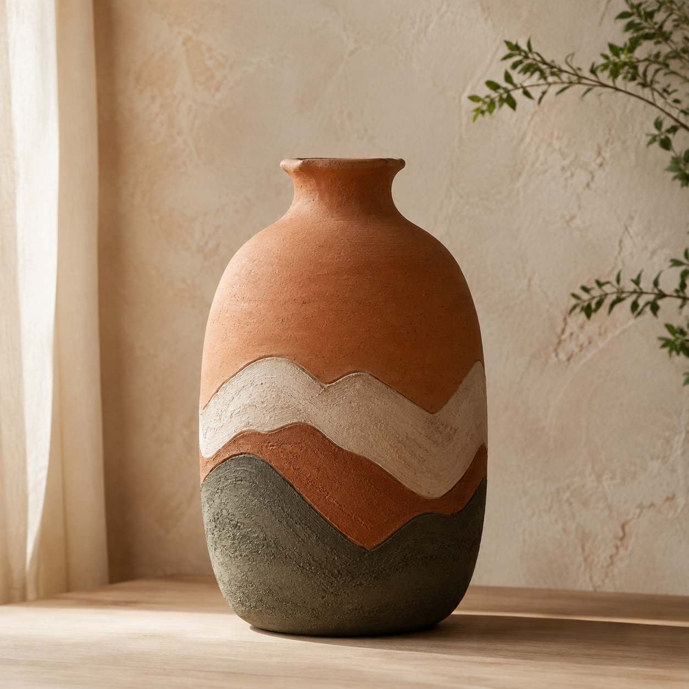

Ver peça ↗
Ver peça ↗Cerâmica Linhares — ES
Artesanato contemporâneo · Espírito Santo
Design com sotaque capixaba. Peças únicas que carregam a matéria, a memória e o jeito de viver da nossa terra.
50+criadores locais
100%feito no ES
01 a 01compra direta

Matéria da vezBarro, fogo e tradição
Escolhas da semana
Objetos únicos, produzidos em pequena escala por mãos capixabas.
6 peças encontradas
Ver peça ↗Cerâmica Linhares — ES
 Adicionar ↗
Adicionar ↗Fibras Vitória — ES
 Adicionar ↗
Adicionar ↗Biojoia Serra — ES
 Adicionar ↗
Adicionar ↗Macramê Linhares — ES
 Adicionar ↗
Adicionar ↗Fibras Anchieta — ES
Adicionar ↗Cerâmica Linhares — ES

Adicionar ↗Cerâmica Vitória — ES

Adicionar ↗Fibras Alegre — ES

Adicionar ↗Madeira Domingos Martins — ES

Adicionar ↗Biojoia Serra — ES

Adicionar ↗Tecelagem Colatina — ES

Adicionar ↗Fibras Vila Velha — ES

Adicionar ↗Escultura Cariacica — ES

Adicionar ↗Cerâmica Guarapari — ES

Adicionar ↗Crochê Anchieta — ES

Adicionar ↗Cerâmica Venda Nova — ES
Tente outro termo ou categoria.
 Quem faz
Quem fazSaberes entre gerações
Em cada peça há um pedaço do Espírito Santo: o barro moldado, o trançado paciente, a madeira que ganha forma. A Arte Nossa aproxima você dessas histórias e mantém o valor com quem cria.
Conheça quem faz →Gente da nossa terra
Produção local e conversa direta. Sem atravessadores.
Cerâmica · Linhares
“Cada vaso carrega o tempo, o cuidado e o barro da nossa terra.”
Cestaria · Vitória
“Trançar fibras é continuar uma memória que começou antes de mim.”
Macramê · Linhares
“Cada nó é encontro entre a calma, a matéria e a casa.”
Você também cria?
Tenha sua vitrine, organize encomendas e venda direto pelo WhatsApp. Simples, próximo e do seu jeito.
Quero fazer parte ↗